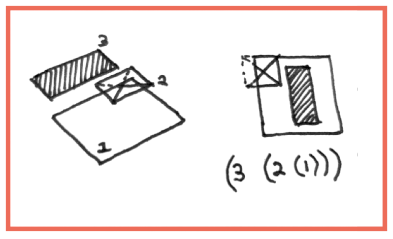

(require 2htdp/image)
(require 2htdp/image)

(require 2htdp/image)
; Here's the constants
(define WIDTH 180)
(define HEIGHT 180)
(define MIDDLE (/ WIDTH 2))
(define BACKGROUND
(rectangle WIDTH HEIGHT "solid" "black"))
(define ROCKET
(bitmap/file "rocket.png"))
(define MOON
(circle 40 "solid" "white"))
; Let's make our image!
(place-image
ROCKET MIDDLE MIDDLE
(place-image
MOON 10 10
BACKGROUND))Lisp feels a bit back-to-front and inside-out when you first start!
Our Rocket is the last item to be processed, and our
BACKGROUND variable the first. How To Design
Programs is a great place to learn programming fundamentals.